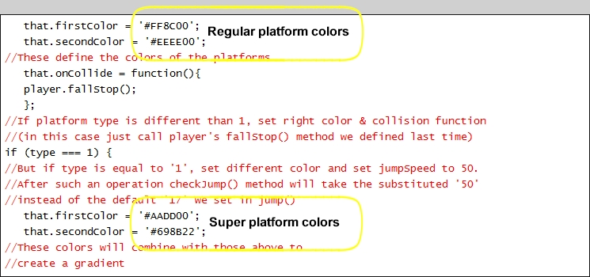
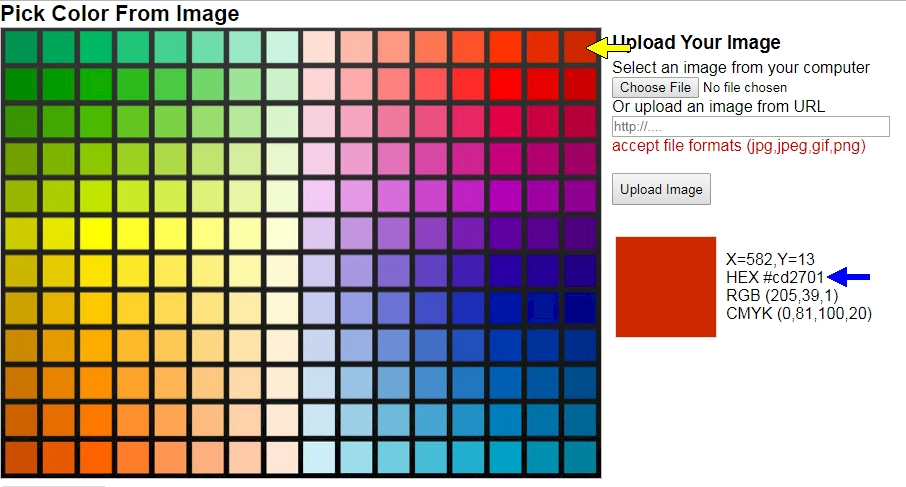
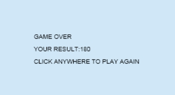
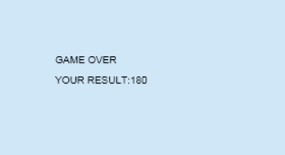

|
Now that you have built a game to my specifications, I'm going to give you an opportunity to make some changes to the code to allow you to personalize the game. You need to realize something very important at this point:
TO COMPLETE THIS PROJECT, YOUR SIMPLE
GAME FROM STEP 5 MUST PLAY CORRECTLY!
If your Simple Game does not play correctly, you will need to fix it before you can complete the Custom Simple Game. Customizing the Simple Game will not only give you an opportunity to add a personal touch to your game, but will give you a chance to show that you understand what was going on with each part of the game as we were putting it together.
CREATE A NEW COPY OF THE GAME FILE
Let's start by creating a copy of your game.js file. We will use this new version of the file to make our changes. DO NOT CHANGE THE CODE OF YOUR game.js file. We want to keep a working version of our game.js file for two main reasons: so we can submit the original file to be graded, and so that we have a copy of the file that actually works in case we mess up our custom game file and need to start over.
Again, DO NOT save the changes in this Step to your game.js file. At the end of this Step, you should have TWO .js files - one named game and one named game2 (note that you will need to submit both of them for grading).
Trust me, someone will save the stuff from this step in their game.js file and I will take off a bunch of points and they will yell 'but why!?!' at me and I'll just point to THIS SENTENCE RIGHT HERE.
Don't let that person be you.
REQUIRED CODE CHANGES
You are REQUIRED to make 5 changes to the code, and then you are free to make additional changes if you wish. Follow the directions below to make the 5 required changes.
REQUIRED CHANGE #1: THE SIZE OF THE CANVAS
The height of the canvas is actually a pretty good size for this game, so we will only be changing the width of the canvas. Remember that you previously changed the canvas size all the way back in Step 1, so you will adjust the width this time the same way.
REQUIRED CHANGE #2: INSERT A NEW CHARACTER GRAPHIC
You must change the game character to another image. The new character you use is up to you. I have supplied you with you several images you can use if you wish (they are in the Additional Resources folder on Schoology, inside a folder called New Characters), or you can create your own game character for extra credit. Remember that your character must have 2 image states just like the angel image:
The easiest way to create your own image is to open the angel image in Photoshop (or some other image editor) and change it to look the way you want. Just be sure that your new characters are on top of each other just like the angel image. This way, you don't have to worry about matching the height and width of your image to that of the angel image.
REQUIRED CHANGE #3: THE COLOR OF THE PLATFORMS
You must change the color of both platforms. You can make them any color you like, just be sure that the super platforms are a different color than the regular platforms. Remember that the game actually uses 2 colors for both types of platforms, which gives them a gradient appearance...

Note that the 6 character codes that set the color are known as hex codes. For example, FF8C00 is the hex code for orange. Exactly how hex codes work will be covered later in the course, but for now just realize that every color has a 6 character hex code associated with it that allows us to very specifically control what color a game is using. Since we won't go into depth about how hex codes work for a while, you can use this website to look up the hex code for the color you wish to use. The website looks like this and is very easy to use:

Simply click on the color box that you wish you use (for example, in the above image I clicked on the upper-right, reddish color pointed at with the yellow arrow) and note that the hex code will be displayed to the right of the color boxes (the blue arrow above). Just place the code for the new color into the game file.
REQUIRED CHANGE #4: THE NUMBER OF PLATFORMS
Since we have a wider canvas, we need more platforms to help out the player. You can set this number to whatever number you feel makes the game fun, but keep in mind that too many platforms will make the game too easy, and too few platforms will make the game unplayable. No matter what, the game must be playable!!
Since you are just starting out as a game creator, the perfect number of platforms may be difficult to estimate. The best way to find a number that you are happy with is to experiment until you have a number of platforms that you like.
When you finish making changes to your game later in this step and you have created a new webpage to hold your game, you can play it in the browser and determine if you like the number of platforms you have set or if you would like to change it.
REQUIRED CHANGE #5: THE GAME OVER MESSAGE
The current Game Over message is rather boring, so let's spice it up a bit. You can make the text say anything you like, just be sure it conveys that the game is over and that you are showing the player what their final score is. Also, the text must be school appropriate. Seriously, don't make me write you up because you put something vulgar in your game.
OPTIONAL CODE CHANGES
You MUST make the five changes indicated above, but to allow you to really customize your game to something that you like, you are free to make additional changes. Some things you may want to consider changing include:
Note that you DO NOT have to make any additional changes past the required 5 if you don't want to (and if you are pressed for time or actually behind right now, don't bother making any changes other then the required 5), this is just an opportunity for you to personalize the game if you wish.
CREATE NEW WEB PAGE
Now that your game2.js file is ready to go, we need create a new webpage for it to play in.
Now we need to test our new game to make sure it works in the browser.
EXTRA CREDIT
If you find yourself ahead of the rest of the class or want to do some work before or after school to get some extra credit, here is a simple addition you can make to your game. If you actually played the example game linked under the image at the top of Step 1, you might have noticed that the Game Over screen looks like this...

While your Game Over screen looks like this...

Your task to earn this extra credit is to add in code that not only displays CLICK ANYWHERE TO PLAY AGAIN, but will actually restart the game when the player clicks on the canvas. Feel free to hop on the Internet to get some help with writing the correct code - just be sure that your game plays like it should and actually restarts when the user clicks on the canvas.